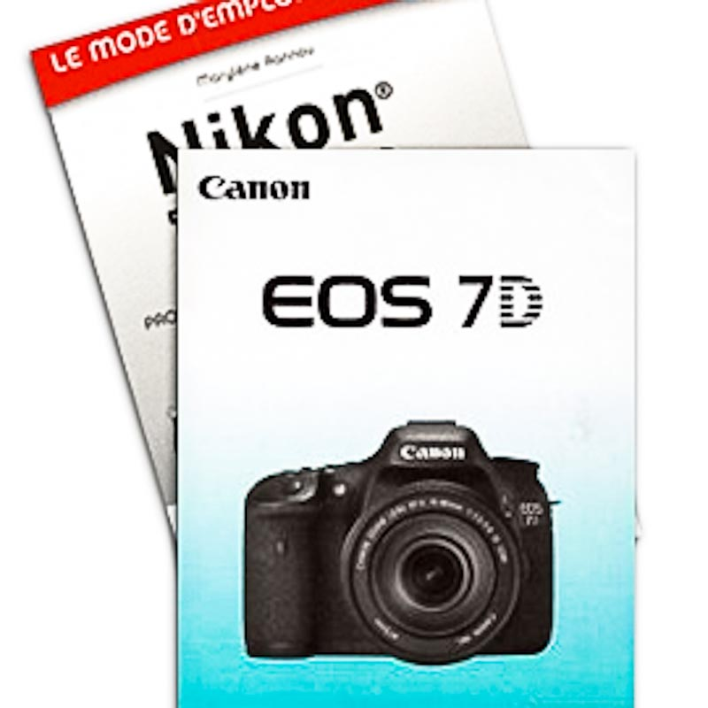
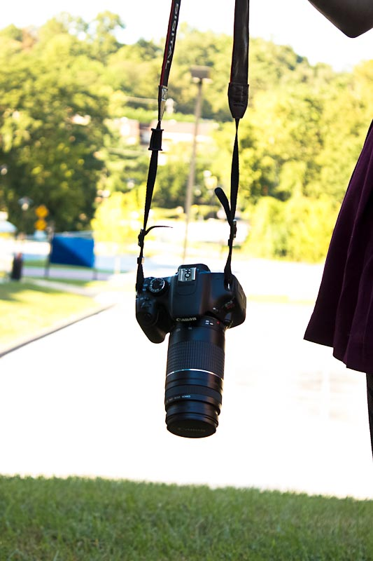
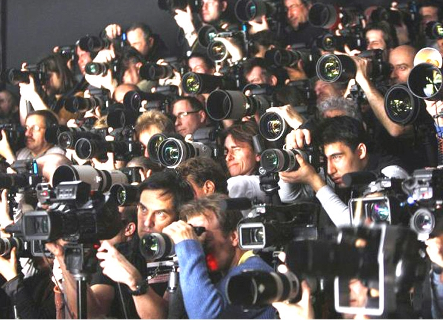
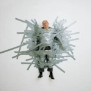

Conseils photo
– Bien commencer
Du modeste point de vue de mon expérience personnelle, pour bien démarrer en photo, il s’agit tout d’abord de respecter certaines règles et disons, exercices. Tout du moins, cet article tentera d’établir une liste non-exhaustive de bons conseils de départ… et pour tout le temps !
Le mode d’emploi !
Lire, relire, éplucher, désosser, comprendre parfaitement le mode d’emploi de son APN me semble indispensable. C’est valable pour n’importe quel appareil alors pourquoi devrait-il en être autrement pour un appareil numérique ?
Il me semble que pour utiliser des fonctions ou des réglages, le B.A.BA consiste à savoir comment s’y prendre. Ça peut sembler fastidieux au premier abord, mais très rapidement, en découvrant toutes les fonctionnalités de votre APN, s’ouvre un éventail de projections de toutes les possibilités de photos que vous aimeriez, pourriez faire. Même si le dernier modèle, tout frais sorti peut donner le sentiment de receler plus de possibilités (et c’est bien entendu vrai, en grosse partie), c’est aussi valable pour un matériel moins récent.
Tout dépend de votre expérience, motivation, but, budget. C’est une équation subtile à laquelle seul vous, pouvez répondre.
Beaucoup de « fora » traitent du sujet du choix de la marque ou du modèle. Ne vous privez pas, ce sont des mines de « retour expérience ».
Votre première mission (si vous l’acceptez) est donc de connaître votre manuel sur le bout des doigts.
Après le mode d’emploi :
L’emploi
Il faut impérativement vous exercer. Vous imposer un rythme régulier, idéalement 1 fois par semaine, plus si possible. Chaque occasion est bonne, l’anniversaire d’un parent, le spectacle de fin d’année du petit.
Même si vous avez une vie sociale désastreuse ce n’est même pas une excuse tant il y a d’occasions dans la nature, en ville et même intra-muros. C’est un exercice de l’oeil. Si vous avez le désir de faire de la photo, les sujets vous sont visibles et l’expérience se chargera de peaufiner votre sensibilité, aiguiser votre regard.
Imposez vous un thème, un exercice particulier, et tâchez de finir la séance en ayant obtenu au moins 1 photo correspondant à ce que vous vouliez réaliser. Parfois le hasard vous ouvre aussi d’autres champs, au détour d’un exercice planifié. L’exercice par thème a l’avantage de vous orienter ou fixer sur le genre de photos que vous voulez réaliser (portraits ou nature, photo d’art ou mariages…). Vous affirmez votre personnalité de photographe, ce qui sommes toutes est le plus recherché en photo.
Le numérique a révolutionné la photo en termes de consommables. Ce n’est pas pour autant qu’il faut sombrer dans le clic à tout va. Prenez le temps de « réfléchir » votre séance afin de mieux choisir vos compositions. Repérez l’endroit, inutile de vous dire que les moments les plus intéressants sont le matin et la fin de journée. Étudiez la lumière, le panorama, les « sujets » à votre disposition et effectuez les réglages correspondants. Si vous ne pouvez ou voulez pas sortir, vous pouvez encore tenter des exercices très intéressants de « pack shot » avec de simples objets usuels ou carrément de la photo d’art. Improvisez un studio éphémère dans votre salon et faites avec les moyens du bord. Faites travailler votre imagination, ce qui nous amène logiquement au conseil suivant.
Les autres
Il ne faut pas hésiter à regarder ce que font les autres, repérez les photographes qui « vous parlent » et dont vous aimez le style et tâchez de reproduire certaines « scènes ». Pas tant pour les copier mais plutôt pour comprendre comment ils ont « étudié » la lumière. Tout cela aura l’avantage de profiter à votre expérience et de vous faire intégrer certains automatismes de réglage qui vous feront gagner beaucoup en temps et plaisir. Internet a été ma première source d’initiation. Il fourmille de sources d’apprentissage et d’inspiration.
L’équipement
Je ne parle pas ici de la marque ou du modèle que vous allez choisir, (ça n’est pas le propos) mais des choses auxquelles vous devez absolument penser avant de tenter tout « shooting ».
- Choisissez une tenue confortable pour pouvoir être mobile et à l’aise. C’est utile pour les « plongées » et « contre-plongées », points de vue originaux, etc.
- Charger sa batterie, mieux encore, ses batteries, avant de partir faire des photos. Une dans l’APN et une de secours en cas de « panne » en plein shoot à ne pas louper.
- Penser à avoir des piles de recharge pour le flash et autres.img_014
- Bien effectuer ses réglages avant la prise de vue. Vérifier ses ISO. Si vous êtes perplexe quant au réglage à adopter, faites une photo en mode auto et regardez les réglages que l’appareil a choisi et reproduisez les en manuel pour commencer.
- Toujours avoir un tissu en micro fibre sur soi, il sert à tout, nettoyer la lentille frontale de son appareil, les poussières sur le viseur, essuyer l’humidité sur le boitier, nettoyer vos lunettes…
- Acheter un rouleau de Gaffer, outil indispensable du photographe, protège votre appareil, sert à fixer du matériel… voire, un sujet… scotché !
- Une feuille de papier blanc, peut s’avérer très utile si on se sert du flash intégré, pour adoucir la lumière trop crue du flash de base.
- Des élastiques, notamment pour faire tenir la dite feuille précitée et bien d’autres usages. je ne saurais que trop vous inciter à investir dans un vrai sac dédié à la photo qui vous convient, surtout pour bénéficier des renforts rembourrés et de la protection (par très basses températures). Sac qui a l’avantage d’offrir des sections de rangement, modulables, qui facilitent l’usage du matériel et l’organisation.
Voilà, vous devriez déjà être bien partis pour une « récolte » fructueuse. N’hésitez pas à aller vers les gens, proposer, discuter, échanger mais surtout n’oubliez pas la partie, « autorisation d’image » et enfin mon dernier conseil sera :
FAITES VOUS PLAISIR !